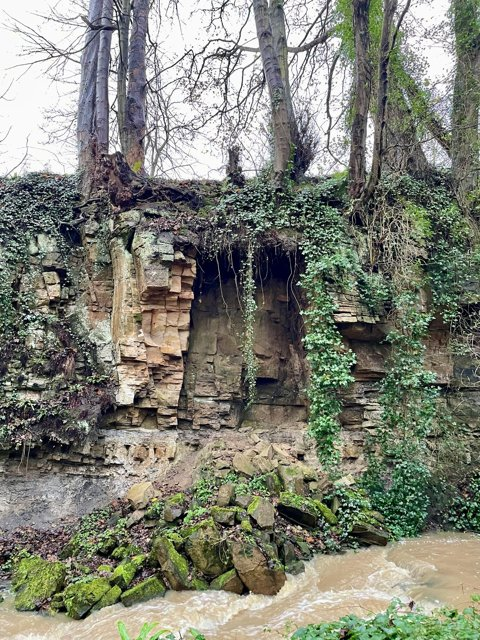
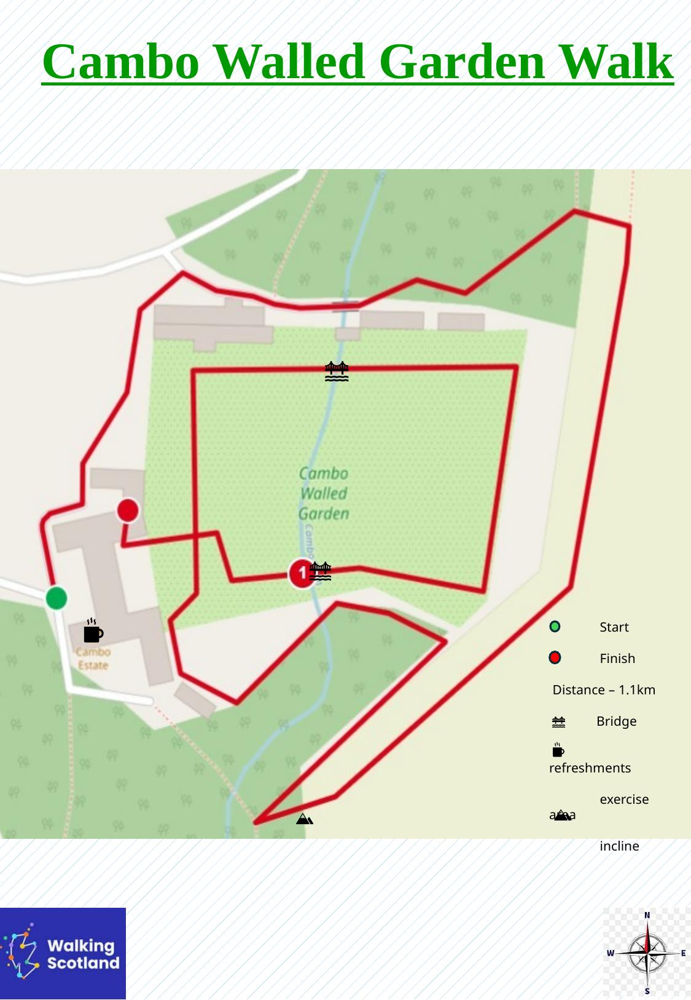
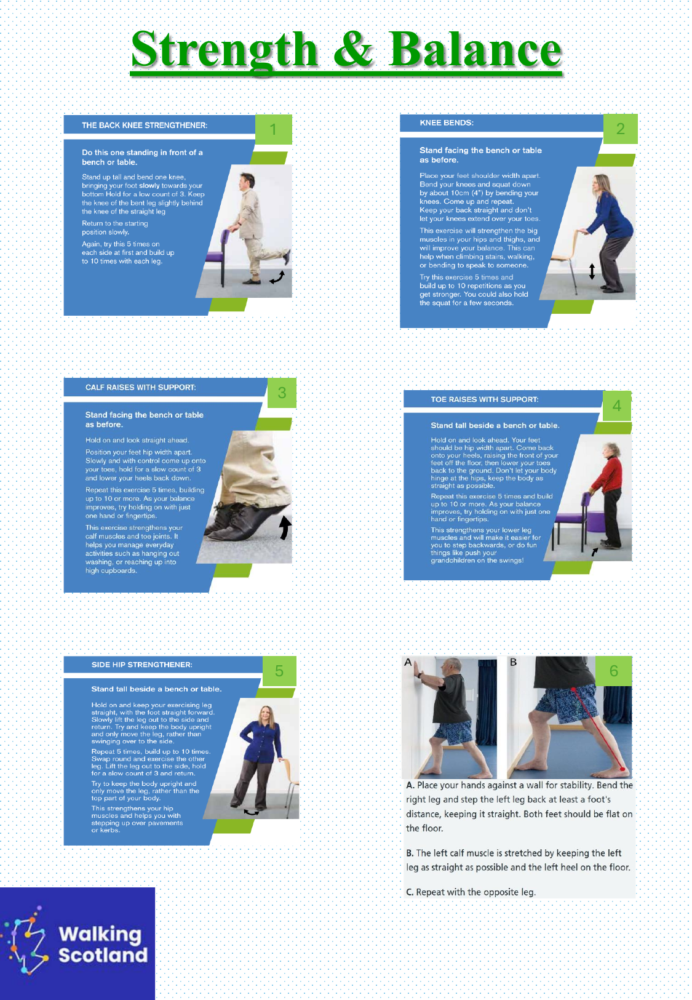
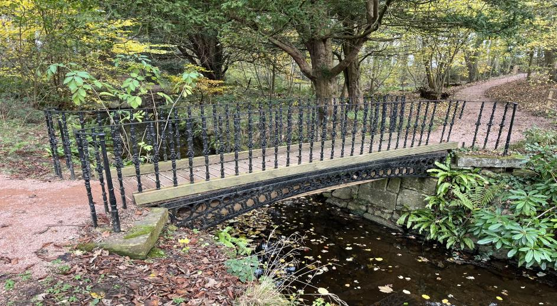
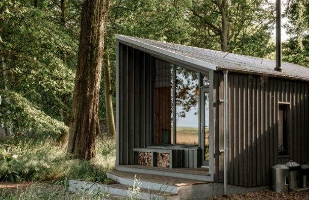

Find your way
Route map and description

StartFinishBridgeRefreshmentsExercise
areaIncline
About this walk
This short 1.1 km walk explores the paths around the Cambo Walled Garden and its adjoining garden areas. The route includes the Prairie Garden, a bridge over Cambo Burn, compost bins and the Edible Garden, with opportunities to enjoy the Walled Garden's planting and garden features before returning to the start.
It is a shorter option for visitors who want to explore the gardens at a relaxed pace and take in their seasonal planting, structures and paths.
Read the full route descriptionThe walk
Description of the walk
This walk takes you from the Stables Visitor Centre heading north, through the Prairie Garden, following the path close to the Walled Garden, past the hard fruit store and twin-arched shed, across a bridge over the Cambo Burn, then up an incline and through an opening that takes you on to a path on the outside of the woodland.
Turn right and follow this path around the outside of the Walled Garden, past the compost bins, until you reach a gate taking you back into the woodland.
At the bottom of the slope, turn right and head up a steady incline taking you to the rear of the Edible Garden and polytunnel where they use sustainable no-dig methods, intercropping, green manures, and extensive bio-active composting.
It's a sheltered site, surrounded on two sides by the Cambo Burn and on another by a south-facing sunny wall and are constantly looking at how to make the garden look good in every season. The Edible Garden recently produced cucumbers, three types of peas, kale and chard, five types of potato, eight types of tomatoes and nine types of squash — plus lettuce, rocket, mizuna, bok choi, radish, mustard, sweetcorn and more.
Produce grown in the Edible Garden directly supplies the on-site Stables Café and shop, providing fresh, low-carbon ingredients for vegetarian and vegan dishes.
From the Edible Garden you access the Walled Garden — rated as outstanding by Historic Scotland, a 2.5 acre Georgian masterpiece.
At this point you can either walk around the perimeter path or just meander through the garden having a look at the various attractions, i.e. the glass house, Japanese tea house, ornamental cast iron bridge, the Cartwheelers, the Sundial Garden and there are specific areas for Mediterranean and meadow planting.
Throughout the various gardens, there is an increasing emphasis on biodiversity and sustainability.
Look out for
Points of Interest
Features of particular interest along the route.

Take care
Safety considerations
The route includes inclines. Take extra care on downward slopes.
Underfoot
Pathway conditions
The path is clear and wide enough for a wheeled walking aid. There are inclines, both down and up, mainly on the outward section, where extra care is necessary, particularly on downward inclines.
Plan ahead
Weather considerations
Depending on weather conditions, paths may be slippery in places.
About our Walks

These walks have been developed by the Monday Walking Group which meets at the Cambo Stables each Monday morning at 9.30am, weather permitting.
The group walks are in association with Walking Scotland, a National Walking and Wheeling charity, whose purpose is to encourage walking by providing a framework for organised walking groups.
Walking Scotland use both terms walking and wheeling as it’s more inclusive. Both words represent the action of moving at a pedestrian’s pace, whether or not someone is unaided or using some kind of wheeled mobility aid.
The Walk Leaders have received appropriate training to ensure the walks are suitable and risk assessed for all attending, including those who use wheeled devices.
The walks are short, safe and social at a pace that we are able to talk. They last approximately 1 to 1¼ hours and between 1 and 5km in length. Depending on weather conditions, the paths may be slippery in places.
Cambo Gardens are managed by the Cambo Heritage Trust with its’ simple aim for Cambo to be a place ‘where people and plants grow’.
Walk Leader Agreement

- We will always try to make the walk safe for you by doing a risk assessment.
- We will describe the route and any hazards to you before we start walking and will let you decide how far you want to walk.
- We will try to make sure that all staff and volunteers have done the Walking Scotland Walk Leader training course.
- We will try to find a walk that is suitable for everyone.
Walking Scotland use both terms walking and wheeling as it’s more inclusive. Both words represent the action of moving at a pedestrian’s pace, whether or not someone is unaided or using some kind of wheeled mobility aid.
Walker Agreement
- I will only do the walk if I am fit enough. If I have any concerns about this I will talk to a Walk Leader or a health professional.
- I will tell a Walk Leader if I feel unwell while out on a walk.
- I will let a Walk Leader know if I am leaving the walk before it has ended.
- It is up to me to make sure I can do the Health Walk safely.
- I understand that I come on a Health Walk at my own risk.
Walking Scotland use both terms walking and wheeling as it’s more inclusive. Both words represent the action of moving at a pedestrian’s pace, whether or not someone is unaided or using some kind of wheeled mobility aid.
Shared information
Strength & Balance Exercises
These exercises can be performed at a suitable location during the walk, as marked on the route map.

About Cambo Estate
The Cambo Estate has been in the Erskine family for 300 years and in 1976 Lady Catherine Erskine and her husband Sir Peter took over the estate and began offering volunteering and training opportunities to the local community and opened to the public in the 1980s at snowdrop time when the grounds around the house are carpeted white.
Developing the walled garden was a logical next step in making a garden of interest to visitors all through the year. The head gardener introduced bold planting inspired by the New Perennial Movement* using grasses and late season perennials that didn’t need staking or deadheading, achieving high output for low input. In late summer and autumn these plantings reach a peak of beauty and interest as the grasses flower amongst herbaceous perennials including persicaria, asters, eupatorium and sedums.
*Note: a naturalistic landscape and horticultural design style that mimics wild plant communities like prairies, meadows, and steppes.
The garden has entered a new chapter which may include training opportunities, an event space, and a contemporary cutting garden.


Cambo Burn flows through the estate and offers scenic woodland walks. There are six early 19th-century cast-iron footbridges crossing the burn at various intervals. Extending 17 acres along the burn, this woodland garden showcases a diverse array of flora and is a testament to generations of Erskine family stewardship. Before reaching the North Sea, Cambo Burn winds through Cambo Ness, a well-known site for rare migrant birds and a tranquil escape by the water’s edge.

Downstream from the Walled Garden a submerged heat-exchange collector, for Cambo House's water-source heat pump, is installed with its arrangement as follows:
- The metal framework supports and protects a submerged heat-exchange pipe assembly.
- Water from the burn flows freely around the pipes.
- A heat-transfer fluid circulates through the pipework in a closed circuit.
- The fluid absorbs heat from the burn and carries it back to the heat pump in Cambo House.
- The heat pump concentrates that energy to provide heating and hot water.
The heat pump replaced Cambo House's previous oil boiler.

Cambo Estate has signed up for the Green Tourism Standard to commit to making further improvements on an ongoing basis and, to date, have achieved the Silver under the Green Meetings standard.
Cambo offers two (The Hideaway & The Bothy) ‘Off-Grid’ self-sufficient eco-cabins where comfort meets adventure.
Powered by solar panels and designed to blend with the environment the cabins are all about spending time outdoors where you can cook on the fire pit or BBQ, laze on the deck and gaze up at the stars or enjoy simply watching deer, squirrels and all the native birdlife.

